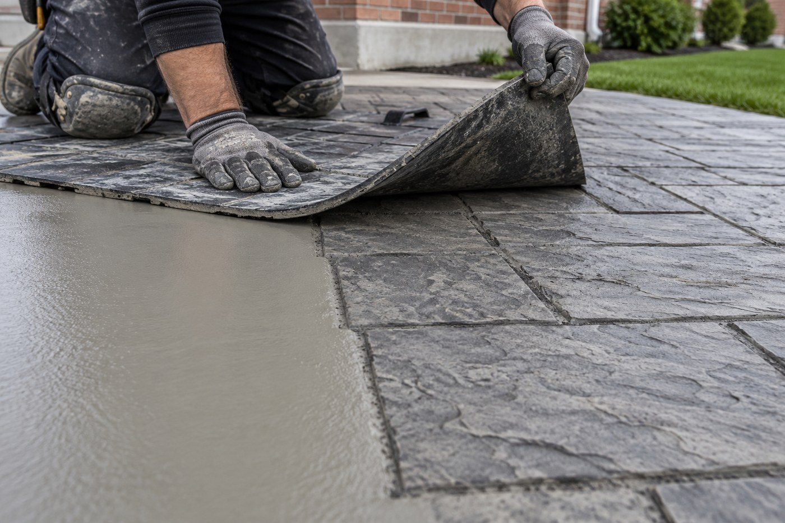

Every October we get the same call. A homeowner in Toronto, Mississauga or Vaughan has finally decided to do something about the front porch that's been shedding corners since spring — and the first thing they ask is whether they've left it too late.
The honest answer is: usually not. But the window is real, it's closing, and the cost of guessing wrong is a season of accelerated damage you'll pay for next year. Here's how to think about timing for concrete resurfacing in the GTA.
The Short Answer
For most of the GTA, the practical outdoor resurfacing season runs from late April through late October or early November, depending on the year. Early October is comfortably inside it. Late November usually isn't.
But that range is a rule of thumb, not a rule. What actually governs the job is temperature — specifically the temperature of the concrete slab itself, not the number on the weather app.
Why Temperature Matters More Than the Month
Cementitious overlays and decorative concrete systems cure through a chemical reaction, not by drying out. That reaction slows dramatically as temperature drops, and it can stop entirely near freezing. If the water in a fresh overlay freezes before the material has developed strength, the surface is compromised — and you often won't see the evidence until the following spring, when it starts delaminating.
The working guidance most professional overlay systems share:
- Surface and air temperature should be around 10°C and rising during application, not falling.
- No frost in the forecast for the cure window — typically the first 24 to 48 hours, longer for some systems.
- The slab itself must be above freezing all the way through. A concrete porch holds cold. After a run of overnight frosts, a slab can still be near freezing at noon even when the air feels mild.
- Sealer has its own, often stricter window. Sealers frequently need warmer conditions and longer dry times than the overlay underneath.
A sunny 14°C day in mid-October with no overnight frost is a perfectly good day to resurface a porch. A 14°C day in mid-November following a week of hard frosts, with darkness at 4:45pm and dew settling by late afternoon, often isn't — even though the thermometer reads the same.

What October Actually Looks Like in the GTA
Toronto's first frost typically arrives somewhere between mid and late October, earlier in the outlying areas — Caledon, Milton, Georgetown and the north end of Vaughan generally cool off before the lakeshore does. Mississauga, Etobicoke and downtown Toronto hold warmth a little longer thanks to the lake and the heat island.
That means early-to-mid October is still a working month in most of the region. It also means the margin narrows every week, and a single early cold snap can close the season faster than expected.
Why Fall Is Often Better Than Spring
Most homeowners assume spring is the ideal time. It's a reasonable instinct and it's often wrong, for three reasons.
1. Spring is when everyone calls at once
March and April are the busiest booking months in this trade across the GTA. Lead times stretch, and the job you wanted done in April gets scheduled for June. A fall booking is frequently a faster booking.
2. Spring concrete is often wet concrete
Overlays need a properly prepared, appropriately dry substrate. A slab that has spent the winter absorbing meltwater can hold moisture well into spring. Fall slabs, after a dry summer, are frequently in better condition to accept a bonded overlay.
3. Damage compounds over winter
This is the one that actually costs money. A hairline crack in October is a crack that water gets into. That water freezes, expands roughly nine percent, and levers the crack wider. Then it thaws and does it again. Toronto goes through dozens of freeze-thaw cycles in a typical winter, and road salt accelerates the whole process by pulling additional moisture into the concrete and driving chemical attack on the cement paste.
A surface that needs a straightforward overlay this October can need substantial crack repair, edge rebuilding, or in bad cases partial replacement by next April. The repair scope grows, and so does the number.
The Cost of Waiting a Season
Rough picture of how scope tends to escalate when a deteriorating surface sits through one GTA winter unprotected:
| Condition in October | Typical fix now | Risk by next spring |
|---|---|---|
| Surface wear, discolouration, no structural cracking | Clean, prep, overlay | Minor — mostly cosmetic drift |
| Hairline cracks, early surface flaking | Crack treatment + overlay | Cracks widen; spalling begins; prep scope grows |
| Active spalling, popped aggregate, soft patches | Repair mortar, rebuild, overlay | Significant — edges and corners break away |
| Crumbling edges, exposed rebar, structural movement | Assessment first; may need partial replacement | Resurfacing may stop being an option |
For reference, a typical GTA porch or steps resurfacing project runs roughly $1,800 – $4,500, and a driveway or larger patio commonly lands in the $3,500 – $7,000 range depending on size, finish and prep required. Full replacement of the same surfaces is routinely two to three times those numbers. The gap is precisely what you protect by acting before the surface deteriorates past the point where an overlay will bond. Our full 2026 cost breakdown goes through the variables in detail.
When We'll Tell You to Wait
We would rather lose the booking than put down a surface that fails. We'll recommend waiting for spring when:
- Overnight temperatures are consistently at or below freezing and the slab can't be reliably warmed.
- The forecast doesn't offer a clean cure window, including for sealer.
- The substrate is saturated and can't be brought to an acceptable moisture condition.
- There's structural movement that needs diagnosing rather than covering. A beautiful overlay on a slab that's still moving is money spent twice.
If that's your situation, the useful fall move is different: protect what's there. A sound sealer applied while conditions still allow it will meaningfully limit salt and water intrusion over winter, and buys you a spring start from a better position. See our guide to concrete sealing and staining in Toronto for what that involves.
Interior Work Has No Season
Worth noting if your project is indoors: microcement floors, walls and feature surfaces are climate-controlled work. Basements, bathrooms, kitchens and feature walls can be done through the winter without any of the constraints above. Winter is genuinely a good time to book interior surfaces, precisely because exterior work has paused.
What to Ask Before You Book a Fall Job
If a contractor is quoting you an October or November exterior job in the GTA, these answers tell you whether they're working to the conditions or just working:
- What's the minimum surface temperature for the system you're using, and how will you verify it? “It'll be fine” is not a method. A surface thermometer is.
- What's the cure window, and what's your plan if the forecast turns? A real answer involves rescheduling, not pressing on.
- Can the sealer be applied in these conditions, or does it wait until spring? Sometimes deferring the sealer is the right call — but it should be a stated decision, not a surprise.
- Is the warranty the same for a late-season job? It should be. If a contractor won't warranty their own fall work, ask yourself why.
Artisan Coat has been resurfacing concrete across the GTA since 2012, through fourteen Ontario winters. We've seen exactly what an unprotected surface looks like in April, and we'd rather help you avoid it.